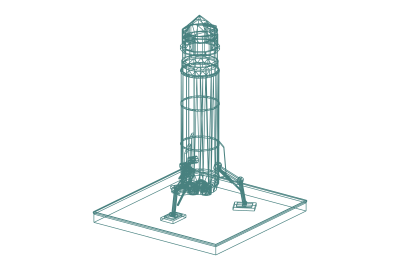
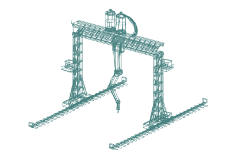
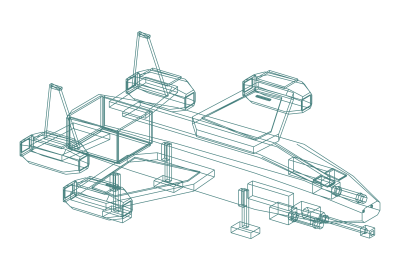
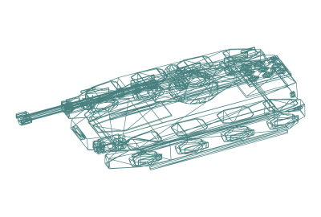
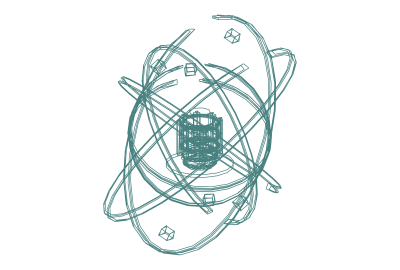
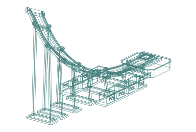

✳ A6 INTERSTELLAR RELOCATION BUREAUPOCKET GUIDE 001 / NO EXPERIENCE NECESSARY
A SMALL GUIDE TO A VERY BIG MOVE
Your new planet.
In 4 easy steps.
A little ambition. A few useful robots. An entire world of possibilities.
SETTLEMENTMADE
SIMPLE★ YOU'VE GOT THIS ★
SIMPLE★ YOU'VE GOT THIS ★
- 01ARRIVAL

THIS SIDE UP ↑Land.
Pick a nice spot. Set down your SH02. Unpack ISAO, your enthusiastic little builder.
Congratulations. You live here now.
- 02HOME IMPROVEMENT

SOME ASSEMBLY REQUIREDBuild.
Spare ship parts → first factory. Add power. Let ISAO raise Stålheart. Think bigger.
Home is where the giant robot is.
- 03NEIGHBOURHOOD WATCH


FRIENDLY? WAVE FIRST.Meet the locals.
Alien threats? Call MÖRK, the KORP Gunship and a few sentries. No threats? Lovely.
A quiet neighbourhood is a good one.
- 04THE BIG CONNECTION


NEXT STOP: STAR POWERPlug into a star.
Build ARC-01. Launch satellites, put SOL on orbital watch, and work toward your Dyson-sphere connection.
Collect at the star. Send power home.
A6 FIELD NOTES / Models by jelaludo · Dyson link: future story concept; collectors orbit the star.Look 02: mission control ↗Look 03: brochure ↗Full story ↗